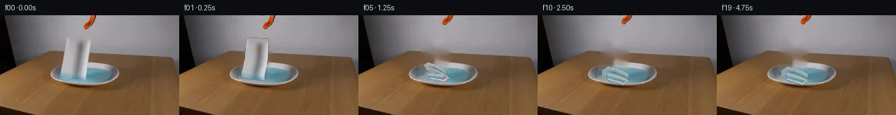

![首帧]()

Round 00
2026-11-05T05:43:56.761354+00:00像素候选变化代码 +257/−0inspection 更新
pixels 8a867e8d51d11556 · code bd2b40adc13f437f
查看本轮 generate.py 真实 diff
--- previous/generate.py +++ current/generate.py @@ -0,0 +1,257 @@ +#!/usr/bin/env python3 +"""Generate the 20-frame PixelWorld continuation using only local pixels. + +The supplied photograph is decomposed into a static background and two small +foreground elements. The towel is animated with a piecewise-affine strip +mesh so its original soft texture survives as it drops and folds into the +dish. All coordinates and animation curves are deterministic. +""" + +from pathlib import Path + +import cv2 +import numpy as np +from PIL import Image, ImageDraw, ImageFont + +import artifact_io + + +ROOT = Path(__file__).resolve().parent +W, H = 256, 144 + + +def smoothstep(x): + x = np.clip(x, 0.0, 1.0) + return x * x * (3.0 - 2.0 * x) + + +def supersampled_polygon(points, blur=0.55): + """Return a clean antialiased uint8 mask for a polygon.""" + scale = 4 + mask = np.zeros((H * scale, W * scale), np.uint8) + pts = np.round(np.asarray(points) * scale).astype(np.int32) + cv2.fillPoly(mask, [pts], 255, lineType=cv2.LINE_AA) + mask = cv2.resize(mask, (W, H), interpolation=cv2.INTER_AREA) + if blur: + mask = cv2.GaussianBlur(mask, (0, 0), blur) + return mask + + +def composite(base, layer, alpha): + a = alpha.astype(np.float32)[..., None] / 255.0 + return np.clip(base.astype(np.float32) * (1 - a) + layer.astype(np.float32) * a, 0, 255).astype(np.uint8) + + +def background_plate(source, towel_mask, tool_mask): + """Reconstruct pixels hidden by the hanging towel/tool. + + A narrow Telea fill handles the wall and table. The dish area is then + explicitly restored from same-scanline liquid/rim samples to keep the + ellipse continuous behind the removed strip. + """ + removal = cv2.dilate(np.maximum(towel_mask, tool_mask), np.ones((5, 5), np.uint8), iterations=1) + bg = cv2.inpaint(source, (removal > 18).astype(np.uint8) * 255, 5, cv2.INPAINT_TELEA) + + # Correct the broad dish bands behind the towel using robust horizontal + # colors sampled from visible areas of the same ellipse. + yy, xx = np.mgrid[0:H, 0:W] + hidden = towel_mask > 8 + for y in range(70, 99): + if y <= 76: + candidates = ((xx[y] >= 128) & (xx[y] <= 161)) | ((xx[y] >= 73) & (xx[y] <= 88)) + elif y <= 94: + candidates = ((xx[y] >= 128) & (xx[y] <= 156)) | ((xx[y] >= 82) & (xx[y] <= 91)) + else: + candidates = ((xx[y] >= 127) & (xx[y] <= 160)) | ((xx[y] >= 78) & (xx[y] <= 90)) + vals = source[y, candidates] + if len(vals): + fill = np.median(vals, axis=0) + xs = np.where(hidden[y] & (xx[y] >= 83) & (xx[y] <= 131))[0] + # Preserve softly reconstructed gradients rather than a flat bar. + if len(xs): + mix = 0.30 if 77 <= y <= 94 else 0.16 + bg[y, xs] = np.clip(bg[y, xs] * (1 - mix) + fill * mix, 0, 255) + return bg.astype(np.uint8) + + +def draw_ripples(frame, progress): + """Add restrained elliptical rings, clipped to the liquid.""" + if progress <= 0: + return frame + overlay = frame.copy() + liquid = np.zeros((H, W), np.uint8) + cv2.ellipse(liquid, (121, 86), (39, 11), 0, 0, 360, 255, -1, cv2.LINE_AA) + + # A primary impact ring and a delayed, smaller secondary ring. + events = [(np.clip(progress / 0.76, 0, 1), 1.0), (np.clip((progress - 0.43) / 0.52, 0, 1), 0.65)] + ring_mask = np.zeros((H, W), np.uint8) … diff truncated; 170 more lines …